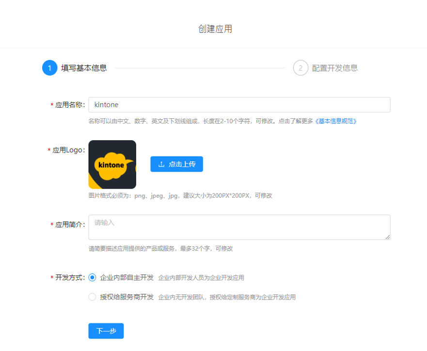

钉钉在企业移动办公领域有着很高的占有率，但是可能大家都会觉得，他在企业定制化，数据分析等领域有着很大的短板。
而我们的kintone作为PaaS平台，可以补足这个短板。很多开发者想知道如何利用钉钉还有阿里云还有paas平台这些资源，来做一个整合开发？
那下面我们就结合钉钉和kintone两者的API，来完成他们之间数据的整合吧。
这次我们的课题是获取钉钉的打卡结果、签到、审批数据，并且同步到kintone。
创建一个小程序
在钉钉开放平台，在“企业内部开发”下建立一个小程序：

记下他的应用信息：
在“接口权限”下根据自己的需求打开权限：
API简介
钉钉开放了丰富的服务端接口，借助这些接口我们可以很轻松的抓取数据到kintone端来进行处理，分析和记录。
调用钉钉接口时，需使用HTTPS协议、JSON数据格式、UTF8编码，访问域名为https://oapi.dingtalk.com。POST请求请在HTTP Header中设置 Content-Type:application/json。
调用钉钉的API前需要先获取access_token令牌，通过access_token才能调用钉钉的其他业务的API。
获取access_token
请求方式：GET
请求地址：https://oapi.dingtalk.com/gettoken?appkey=key&appsecret=secret
更具体的开发代码请参考
https://cybozudev.kf5.com/hc/kb/article/1295078/
现在我们就可以申请kintone开发账号，直接来实践kintone和钉钉的整合吧！
申请链接👇👇
https://cybozudev.kf5.com/hc/kb/article/1307437/
申请二维码👇👇
关注微信公众号 cybozu开发者网站 ，我们会在第一时间发布本网站的最新信息，让你掌握第一手资料。